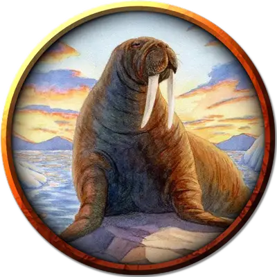

Морж
Walrus
Большой Зверь, без мировоззрения

Класс Доспеха 9
Хиты 22 (3к10 + 6)
Скорость 20 футов, плавая 40 футов
| мод | спас | ||
|---|---|---|---|
| СИЛ | 15 | +2 | +2 |
| ЛОВ | 9 | −1 | −1 |
| ТЕЛ | 14 | +2 | +2 |
| мод | спас | ||
|---|---|---|---|
| ИНТ | 3 | −4 | −4 |
| МДР | 11 | +0 | +0 |
| ХАР | 4 | −3 | −3 |
Чувства пассивное Восприятие 10
Опасность 1/4 (50 опыта)
Бонус мастерства +2
Особенности
Задержка дыхания. Морж может задержать дыхание на 10 минут.
Действия
Клыки. . Рукопашная атака оружием: +4 к попаданию, досягаемость 5 фт., одна цель. Попадание: 7 (2к4 + 2) колющего урона.
Описание
Моржи — это крупные морские млекопитающие, предпочитающие арктический климат и общающиеся между собой посредством урчания и рёва. Типичный взрослый экземпляр весит не менее 2000 фунтов. Люди охотятся на них ради мяса, жира, кожи, костей и бивней.